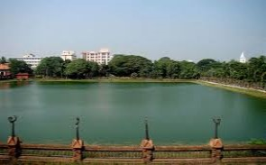

Kozhikode Beach, Mananchira, Kadalundi Bird Sanctuary, Valayanad Devi Temple, Thalikkunu Shiva Temple, Beypore Beach, Srikanteshwara Temple, Thusharagiri Fall, Kakkayam Dam and many more.
Calicut, popularly known as Kozhikode among the locals is a place resplendent with natural beauty, pristine beaches, and historical monuments. This place offers tranquility and the best haven to take a break from a busy life and relax. There are waterfalls like Kakkadampoyil Waterfall and Tusaragiri waterfalls and also some religious places like Tali Temple, Valayanad Devi Temple.
Beautiful beaches like Kappad, Beypore, and Kozhikode are perfect spots to spend your lazy days. Today Kozhikode is the third- largest city of Kerala and draws tourists throughout the year due to its vast tourist attractions and pleasant weather.
The city is an idyllic place lying between the vast expanse of Arabian Sea on the west and the peaks of Wayanad hill on the east.
With so many places to see in Kozhikode, a visit to this famous city is always a memorable one. Good food, friendly people, and above all a great place to explore and enjoy make Kozhikode one of the best tourist destinations of Kerala.
Top places to visit are:
Thusharagiri falls
Beypore beach
Mananchira
Kozhikode Beach